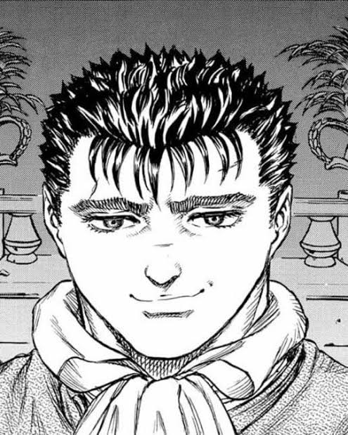
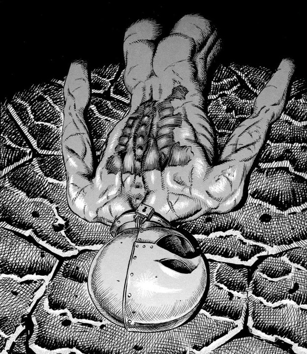
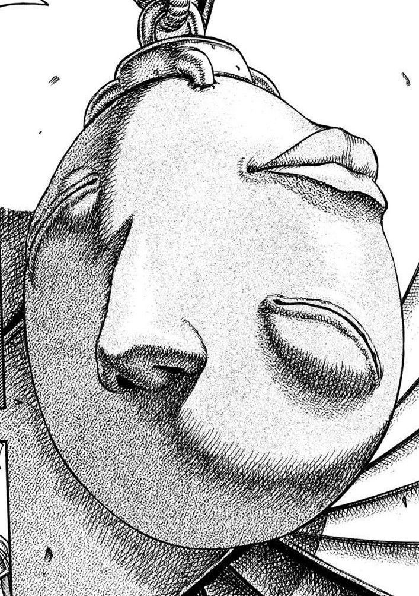
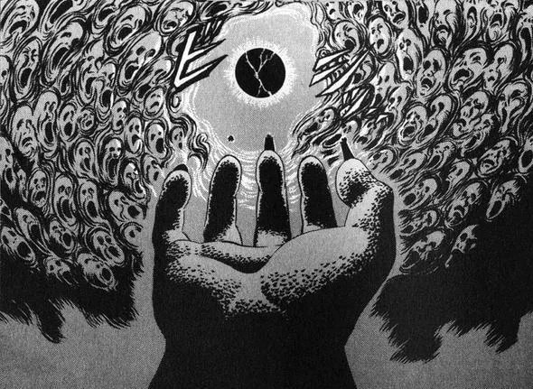

O Bando do Falcão
O bando do falcão foi um grupo montade por Griffith para alcançar seu sonho de ter um reino, o
grupo era formado apenas por plebeus e nenhum nobre, mas mesmo assim ganhou muita fama e respeito
principalmente no reino de Midland sendo conhecido como o exercito mais forte da história, o unico
exercito que nunca perdeu uma batalha, depois de muitas conquistas, todos ali ganharam titulos de
nobres.


Depois de tudo que passaram, mesmo muito grato, Guts sentiu que era o momento de trilhar seu
próprio caminho e partiu em uma jornada pessoal de auto-desenvolvimento, ao partir, Griffith
enlouqueceu, dormiu com a princesa do reino de Midland, e foi aprisionado, pela acusação de traição
e então torturado pelo Rei durante um ano, após o que ocorreu Guts reencontrou o bando eles haviam
perdido muitos membros, mas ao saber de Griffith, Guts e o que sobrou do bando foram atrás dele, com
a ajuda da princesa de Midland que era apaixonada por Griffith o encontraram, mas mesmo a beira da
morte, continuava vivo, como se fosse um milagre, ou até mesmo obra do ''Destino''.
O ECLIPSE
Ao ser resgatado, literalmente graças ao Destino, Griffith reencontra um Behelit, um objeto vivo,
capaz de invocar a mão de Deus, um grupo formado por 4 seres que abandonaram sua humanidade em troca
de um poder inigualavel, com o Behelit em mãos Griffith o escolhido é capaz de se tornar o novo
membro da mão de Deus, mas para adquirir tal cargo e poder deve ser feito um sacrifício a altura,
sem exitar Griffith aceita o acordo.


Quando aceita o acordo, Griffith aceita sacrificar todos os que foram atras de salva-lo, o Bando do
Falcão, abandonando todos para a morte certa contra demônios insaciáveis. Quase todos morrem, mas
pela primeira vez restaram dois sobreviventes, Guts e sua amada Caska, sendo ambos as duas unicas
pessoas em toda a história que foram capazes de sobreviver ao Eclipse, mas ainda carregam a marca do
sacrificio, tendo que conviver pelo resto de suas vidas entre o mundo real e o espiritual, Guts jura
um dia se vingar de Griffith, nem que tenha que destruir todo o mundo no processo.
Kentaro Miura faleceu em 6 de maio de 2021, deixando sua obra sem um final, desde então ela vem sendo
continuada por Kouji Mori, um dos melhores amigos de Miura, e pelo Studio Gaga, um grupo de artistas que
trabalhava com Miura.